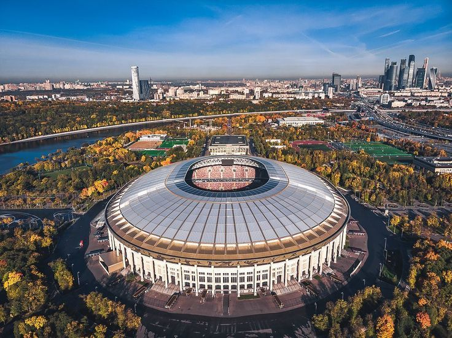
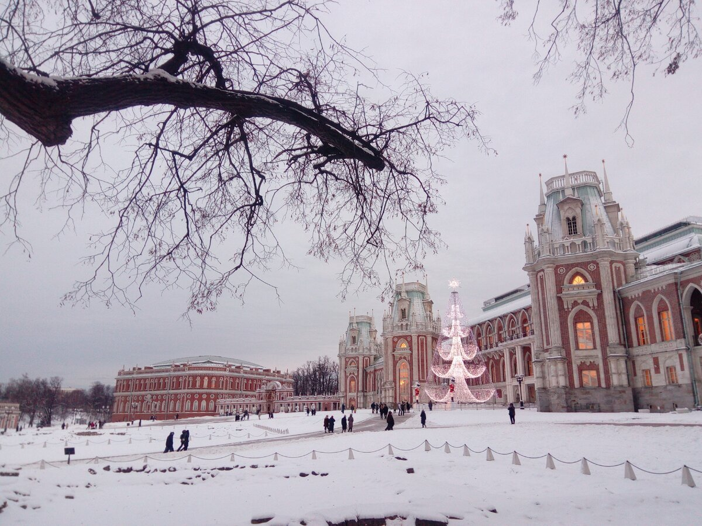
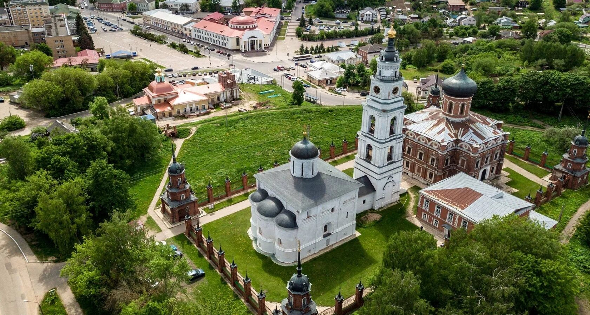
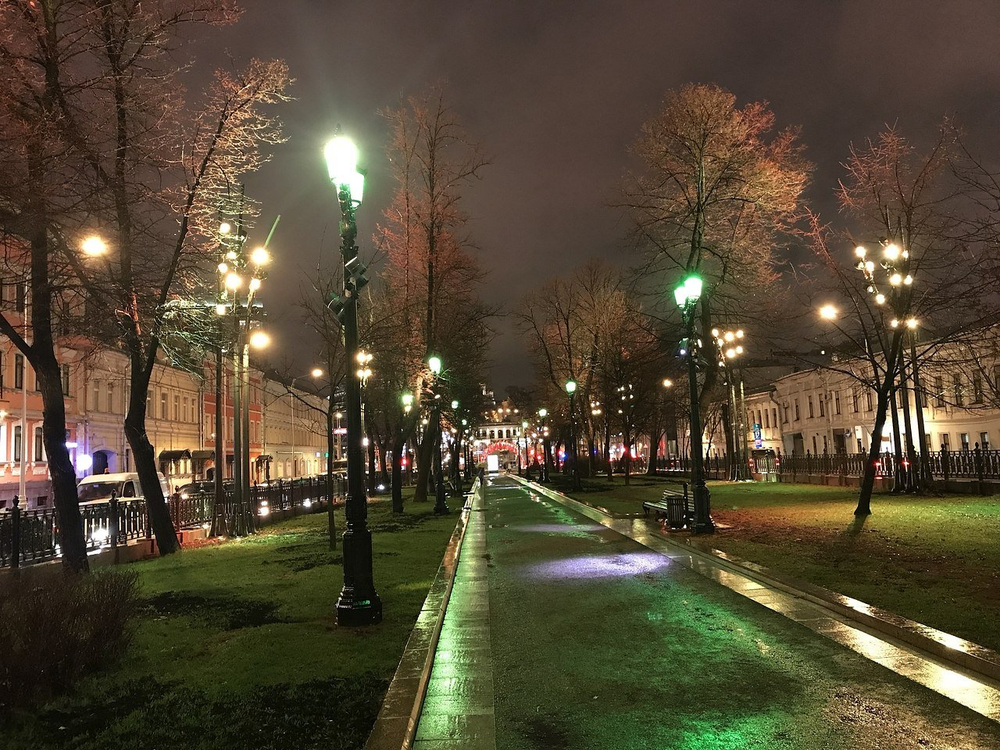
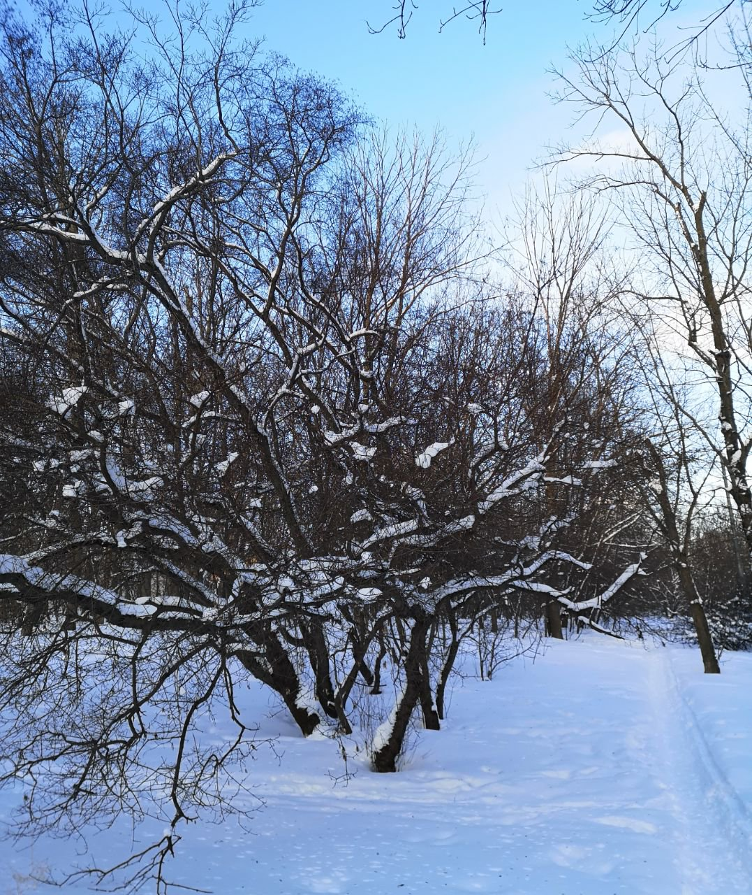

Сканди-мероприятия
-
Лужники
17 февраля 2024г 9.00
СУББОТНЯЯ ТРЕНИРОВКА ПО СКАНДИНАВСКОЙ ХОДЬБЕ В ЛУЖНИКАХ + посещение бассейна Лужники(по желанию)
Встречаемся в 8.45 у выхода N3 из метро Воробьевы горы
Что ждёт на тренировке:
• Активная разминка
• Отработка техники скандинавского шага
• Растяжка
Продолжительность основной тренировки 2 часа
Свои палки иметь желательно. Если их нет, предоставим (аренда 100р) Сообщите дополнительно при регистрации.
После тренировки все желаюшие идут в аквакомплекс "Лужники"
Пьем кофе/чай в Aквакафе и мило общаемся.
Посещение бассейна стоимость:
Бассейн 50м - 850р
Бассейн 25м - 650р
В стоимость входит 1 час плавания в бассейне + 1 час термы.
Оплачивается в кассах бассейна.
ВНИМАНИЕ! В бассейне наши тренера не имеют право поводить занятия. Поэтому плавание свободное.
Стоимость: 1000р
ЗаписатьсяПодробнее -
Царицыно
18 февраля 2024г 10.00
ВОСКРЕСНАЯ scandi-прогулка в Царицыно и Бирюлёвском дендропарке
Встречаемся в 9.45 у центрального входа в музей-заповедник Царицыно. Вход в парк N1 со стороны метро Царицыно
Прогулка для тех, кто уже владеет техникой Скандинавского шага или просто любит хорошие пешеходные маршруты на 10-12 км по пересеченной местности.
Что ждёт:
📍Разминка с палками
📍Пешеходный маршрут по Царицынскому и Бирюлёвскому дендропарку на 10-12 км с остановками на упражнения
📍По желанию попробуем с вами технику трекинга. В Царицынском парке есть такая возможность.
📍Растяжка
📍Для желающих дружеское чаепитие в кафе Андерсон
Ориентировочная продолжительность 4 часа.
Окончание также у Центрального входа в парк Царицыно
По необходимости предоставим в аренду палки (100р).
Инструктор Волосюк Маргарита
Стоимость: 1000р
ЗаписатьсяПодробнее -
Волоколамск и Иосифо-Волоцкий монастырь
23 февраля 2024г 9.00
АВТОБУСНО-ПЕШЕХОДНАЯ ПОЕЗДКА «Древний Волоколамск и Иосифо-Волоцкий монастырь»
Познавательная поездка в самый древний город земли Московской, впервые упомянут в летописи под 1135г!
Но интересоваться мы будем не только древностями, первая остановка - церковь Александра Невского в посёлке Княжье озеро, освещена в 2009г, достойный образец современной церковной архитектуры. Одной из святынь храма является Чудотворная икона Божьей Матери Одигитрии 14 века, знаменитый образ Торопецкой Божьей Матери.
Далее мы увидим один их старейших храмов Московской области - храм Рождества Пресвятой Богородицы на Возмище 16 века.
Погуляем по заброшенной усадьбе 18 века Ивановское-Безобразово, которой до 1917г владели представители древнейшего дворянского рода - Безобразовы, начало которому положил "выезжанец" из земли пруссов Христофор Безобраз.
Но главной целью нашей поедки остаётся один из интереснейших монастырей Волоцкого удельного княжества - Успенский Иосифо-Волоцкий монастырь. В монастыре провёл более 10 лет своей жизни книжник Максим Грек, здесь нашёл свой последний приют любимый опричник Ивана Грозного - Малюта Скуратов (Григорий Лукьянович Богданов-Бельский).
Будет экскурсия и запланировано посещение единственного в нашей стране музея Библии! Обязательно состоится и пешая прогулка вокруг озер, окружающих обитель Преподобного Иосифа Волоцкого.
Что мы увидим в пути:
📍Посёлок Княжье озеро. Храм Александра Невского
📍Церковь Рождества на Воздмище 16 век
📍Храм в усадьбе Ивановское-Безобразово (заброшка)
📍Пешая прогулка по усадьбе Кашино
📍 Иосифо-Волоцкий монастырь и музей библии с экскурсией
Обед в одном из кафе Волоколамска (кафе Бегемот, Русь, чайхана Андижан). Перед возвращением чаепитие в трапезной монастыря.
Стартуем в 9.00 от метро Строгино.
Место встречи сообщим дополнительно в групповом чате.
Возвращение в 19.00 к метро Строгино (но время ориентировочное, т.к. наши любопытные души могут решить заглянуть ещё куда-нибудь)
Сопровождающий экскурсовод Василий Злотников
Организатор Волосюк Маргарита
В стоимость входит трансфер на микроавтобусе по всему экскурсионному маршруту, путевое экскурсионное сопровождение, экскурсия в монастыре и музее Библии, использование радиогида
Дополнительно оплачивается обед и чаепитие.
Группа 8-10 человек
Стоимость: 7000р
ЗаписатьсяПодробнее -
Scandi-прогулка «Московские бульвары»
25 февраля 2024г 10.00
Прогулка для любителей хороших пешеходных маршрутов и Скандинавской ходьбы.
Встречаемся в 9.45 у выхода N1 метро Кропоткинская.
Начнём на маршрут с разминки на Гоголевском бульваре.
Пройдём по всему бульварному кольцу в среднем темпе, останавливаясь в самых красивых точках для фотосессий.
Нас никто не будет подгонять. Захотим попить кофе или глинтвейн по пути, мы это сделаем с удовольствием, наслаждаясь хорошей дружеской компанией и продолжим маршрут дальше.
Конечная точка маршрута Яузский бульвар и кинотеатр «Иллюзион». Там можно неспеша выпить хороший кофе. Но можно остаться и на киносеанс. Билеты можем купить предварительно или уже на месте (это, конечно, необязательно, по желанию).
Ближайшее метро на финише Таганская.
Протяжённость 9 км
Продолжительность около 3 часов
Инструктор Волосюк Маргарита
В стоимость не входят билеты в кинотеатр
Стоимость: 1000р
ЗаписатьсяПодробнее -
SCANDI-прогулка и тренировка в Химкинском ландшафтном заказнике
2 марта 2024г 11:00
Друзья, 2 марта приглашаем на Большую тренировку и прогулку по зеленой территории на северной окраине Москвы.
Отправляемся исследовать Химкинский заказник. Пройдем ок.7 км, позанимаемся техникой СХ, сделаем дыхательные упражнения и упражнения на различные группы мышц, а также нейрогимнастические упражнения. После всех активностей отдохнем в уютном кафе, если будет желание))
Протяженность маршрута: ок.7 км
Продолжительность программы: ок.3 ч (без посиделок)
Старт в 11:00 у ст.м.Ховрино (Замоскворецкой линии)
Маршрут круговой. Вернёмся к ст.м.Ховринр.
Инструктор: Краснова Елена
Стоимость: 1300р
ЗаписатьсяПодробнее -
SCANDI-путешествие по выставке «Россия» (часть 1)
3 марта 2024г 10:00
Выставка Россия, одно из важнейших культурных событий нашего времени. Уже более 6 млн. человек смогли лично убедиться в уникальности и неповторимости выставки Россия.
Более 30 павильонов, в которых можно познакомиться с историей, достопримечательностями и экономическим потенциалом как каждого из 89 регионов нашей необъятной родины, так и России в целом.
Приглашаем вас на выставку Россия. Вас ждёт удивительное путешествие по России, много нового, интересного и, порой, удивительного.
Выставка Россия это интерактивы, конкурсы, тематические экспозиции и активности. Каждый день новые и интересные.
Маршрут экскурсии, на которую мы приглашаем вас, разработан специально для тех, кто ценит активный образ жизни и готов узнавать новое и находить необычное в привычном.
В первом визите выставки посетим павильоны:
✅75-й павильон (частично);
✅павильон Сбербанка (считается одним из наиболее интересных павильонов выставки);
✅Музей кино.
А в завершении нашего путешествия мы погрузимся в мир удивительного человека - Сергея Эйзенштейна.
Мемориальная экспозиция «Кабинет Сергея Эйзенштейна» в Музее кино это не только интересный рассказ о классике советского кино, но и глубокое проникновение в наследие того, кого можно смело назвать Леонардо советской эпохи.
Более трехсот мемориальных предметов, уникальная коллекция рисунков мастера и неповторимая, творческая атмосфера квартиры режиссера располагавшейся по адресу ул. Потылиха 54Б
✅Обзорная экскурсия по территории выставки.
Продолжительность экскурсионной части 3,5 - 4 часа.
**возможны изменения из-за графика работы павильонов
Встречаемся в 9.45 у Гостевого центра (ориентир Центральный вход на ВДНХ)
Скандинавские палки берём с собой (но желающие могут обойтись и без них). На территории большие расстояния и будет где походить.
По окончании экскурсии все желающие (те, кто не устал и хочет добавить ещё физической активности) могут остаться.
Мы пообедаем в одном из кафе на территории и можем совершить марш-бросок по Ботаническому саду.
Авторская экскурсия по выставке Дмитрия Лесных;
Инструктор Волосюк Маргарита
Стоимость 2400 р В стоимость входит всё экскурсионно-спортивное сопровождение; экскурсии в павильонах; использование радиогида. Группа до 10 человек
Стоимость: 2400р
В цену включено: всё экскурсионно-спортивное сопровождение; экскурсии в павильонах; использование радиогида
Записаться Подробнее
Подробнее -
SCANDI- ТУР выходного дня "Русское чаепитие и Праздник солнца по-чукотски"
16 марта 2024г
Друзья, приглашаем вас 16 марта в небольшое путешествие в Тверь и Тверскую область. Всего за один день вы побываете и на традиционном русском чаепитии, которое пройдет по всем старинным традициям, и на празднике солнца по-чукотски! )) И, конечно же, позанимаемся скандинавской ходьбой в парке города и на набережной.
Сначала познакомимся с историей "водогрейного сосуда" в России и побываем на самом настоящем русском чаепитии с пряниками и баранками в воссозданном интерьере русской чайной.
Потом сканди-прогулка + тренировка по парку и набережной: познакомимся немножко с историей Твери, побываем на стрелке Волги и Тверцы, побываем у памятника самому знаменитому тверитянину Афанасию Никитину.
А затем перекусим в кафе города и отправимся на оленью ферму, где побываем на Празднике солнца (Масленице по-чукотски). Потом отправимся на оленье сафари. Там будет самая трогательная часть нашего путешествия – непосредственное знакомство с оленями и оленятами. По возвращении на ферму нас будет ждать чай с блином в трапезной и рассказ про оленей.
Вечером возвращаемся в Тверь, ужинаем и отправляемся на Ласточке в Москву.
Отправляемся в Тверь в субботу с Ленинградского вокзала в 7:52 утра
Возвращаемся на Ленинградский вокзал в субботу в 22:30.
Инструктор: Краснова Елена
Экскурсоводы: сотрудники музея и оленьей фермы
Стоимость:
6500р - взрослые
5500р - дети с 10 до 14 лет.В цену включено: экскурсионно-спортмвное сопровождение в музее и на оленьей ферме, сафари, трансфер на ферму и обратно, завтрак в кафе города
Оплачивается самостоятельно: ласточка до Твери и обратно (для пенсионеров бесплатно по соц.карте москвича), автобус от вокзала до музея, ужин
Записаться Подробнее
Подробнее -
"Сто лет легенде". Scandi-прогулка вдоль долины реки Сетунь и Музей Мосфильма
23 марта 2024г 11:00
23 марта отправляемся на Scandi-прогулку-тренировку и в музей. В этом году исполнилось 100 лет с тех пор, как открылись двери отечественной "Фабрики грез".
Мосфильм! Он пережил и НЭП, и коллективизацию, и Великую Отечественную войну, и перестройку, и всё, что было потом.
Сто лет киностудия шла рука об руку с нашей страной: развивалась и угасала, но сумела возродиться. И сейчас является одной из крупнейших в мире.
На экскурсии посетим музей киноконцерна Мосфильм и съемочные павильоны. А это значит познакомимся с историей и современностью киностудии, увидим коллекцию костюмов, макетов, автомобилей и различных предметов, снимавшихся в известных нам фильмах, прогуляемся по "настоящему городу" и заглянем в съёмочный павильон.
Но сначала будет тренировка и сканди-прогулка вдоль долины реки Сетунь. А потом отдохнём, подкрепимся в кафе и на экскурсию.
Инструктор: Краснова Елена
Экскурсовод музея Киноконцерна Мосфильм.
Протяженность маршрута: около 7 км
Продолжительность: около 7 ч.
Начало маршрута: ст.м.Минская в 11 ч
Окончание : в 18 ч на Мосфильме или пройдем еще 4 км до ст.м.Воробьевы горы (+1 ч)
Стоимость:
2400р - взрослые
2200р - дети с 10 до 14 лет.
Предоплата: 1000 р до 14 марта
Важная информация: т.к.билеты на экскурсию невозвратные, то предоплата не возвращается.
Записаться Подробнее
Подробнее -
SCANDI-прогулка в парке Дубки + прогулка по Тимирязевской Академии
24 марта 2024г 10:00
Тимирязевская академия — настоящий «город в городе» со своими улицами, аллеями, десятками учебных корпусов и лабораторий. Здесь преподавали и вели исследования такие знаменитые учёные как Тимирязев, Прянишников, Шредер, Вавилов и другие.
✅Формат подойдет как любителям скандинавской ходьбы так и любителям просто пешеходных экскурсий.
Первая часть программы спортивная; вторая часть программы пешеходно-экскурсионная.
📍Для тех, кто хочет бодро пройтись по парку Дубки встреча в 9.45 у выхода N3 метро Тимирязевская.
📍12.00 обед в трапезной Никольской церкви.
📍13.00 У Никольской церкви встречаем нашего экскурсовода и остальных участников группы (тех, кто готов присоединится только к экскурсии).
Наша экскурсия начнётся именно со знакомства с Никольского храма, а дальше мы проедем одну остановку на метро и уже отправимся в путешествие по Тимирязевской академии.
Вместе с выпускником «Тимирязевки» мы совершим прогулку по знаменитой Лиственничной аллее и вдоль Фермских прудов. Осмотрим как сохранившиеся постройки усадьбы Разумовских XVIII века и здания XIX века, так и конструктивистские постройки 1930-х годов. Узнаем некоторые легенды и студенческие истории.
По традиции будем охотиться за деталями и различными «интересностями». Увидим одну из старейших в России метеостанций, сохранившиеся ледники, оранжереи, опытные площадки и лаборатории. Попытаемся ответить на любопытные вопросы. Почему окна в ректорате имеют выпуклую форму? Зачем нужна полевая опытная станция и вегетационный домик? Где располагались храм XVII века и шуховская башня?
Возможно также посещение музея В.Р.Вильямса
📌Пешеходный экскурсионный маршрут порядка 5 км
Длительность сканди-прогулки в парке Дубки~ 2 часа
Ориентировочная длительность экскурсионной программы ~ 3,5 часа (но это неточно). Все программы проходят в неформальном режиме, поэтому время очень ориентировочное. На экскурсии будут использоваться радиогиды.
Инструктор Волосюк Маргарита
Экскурсовод Антон Гладилин
Стоимость:
1000р - тренировочная часть
1600р - экскурсионная часть
2300р - комбинированная стоимость за обе части
📌Отдельно оплачивается посещение музея Вильямса
Записаться Подробнее
Подробнее -
Царственные жёны на Измайловском острове
30 марта 2024г 9:30
Приглашаем 30 марта в 9:30 на SCANDI-прогулку в Измайлово, после которой мы посетим с экскурсией выставку, посвященную царственным обитательницам Измайловского острова.
Измайлово – удивительное место. Начнем с того, что это бывшая загородная резиденция русских царей, расположенная на единственном в Москве рукотворном острове, который появился здесь по приказу царя Алексея Михайловича. Именно он повелел выкопать в пойме реки Серебрянки два пруда Серебряный и Виноградный, вследствие чего, и возник рукотворный остров, ставший центром крупнейшего экспериментального хозяйства своего времени. Здесь Петр I нашел старый ботик «Святой Николай», ставший «дедушкой русского флота», а увлечение юного императора мореплаванием привело к созданию военно-морского флота России.
Царскую загородную усадьбу на Измайловском острове в XVII–XVIII веках активно посещали российские правители и члены их семей. В этой резиденции отдыхали многие известные женщины того времени: царица Наталья Кирилловна Нарышкина — мать Петра Первого, его сестра Софья, известная своими политическими амбициями. Здесь прошло детство будущей императрицы Анны Иоанновны; в измайловских угодьях любила охотиться государыня Елизавета Петровна. И это далеко не полный список правительниц, посещавших подмосковную резиденцию, которую можно было сравнить с райским садом.
Во время экскурсии мы узнаем историю измайловской усадьбы, услышит рассказ о быте российских цариц и императриц, их привычках, любимых занятиях во время отдыха, а также о системе обучения и воспитания царевен. Особое внимание будет уделено женским нарядам той эпохи, которые претерпели кардинальные изменения в результате реформ Петра Великого.
Перед экскурсией хорошенько позанимаемся, пройдем около 8 км по лесопарковой территории, надышимся чистым воздухом, затем пообедаем. А потом желающие смогут ещё выпить ароматный кофе в небольшой кофейне. И вот, уже потом отправимся на экскурсию.
Встречаемся в 9:30 на станции МЦК «Соколиная гора».
Протяженность маршрута: ок.9 км (легкий, без перепада высот)
Продолжительность: 6 ч
Программа закончится в 15 ч в усадьбе Измайлово.
Инструктор: Краснова Елена
В оплату программы включена экскурсионно-спортивная программа. Предоплата необходима для приобретения билетов в музей и на экскурсию. Обед оплачивается самостоятельно.
Подробная информация о времени и месте встречи после регистрации в группе в Телеграмм
Стоимость:
2000р - взрослые
1900р - пенсионеры
Предоплата: 500 р
Записаться Подробнее
Подробнее